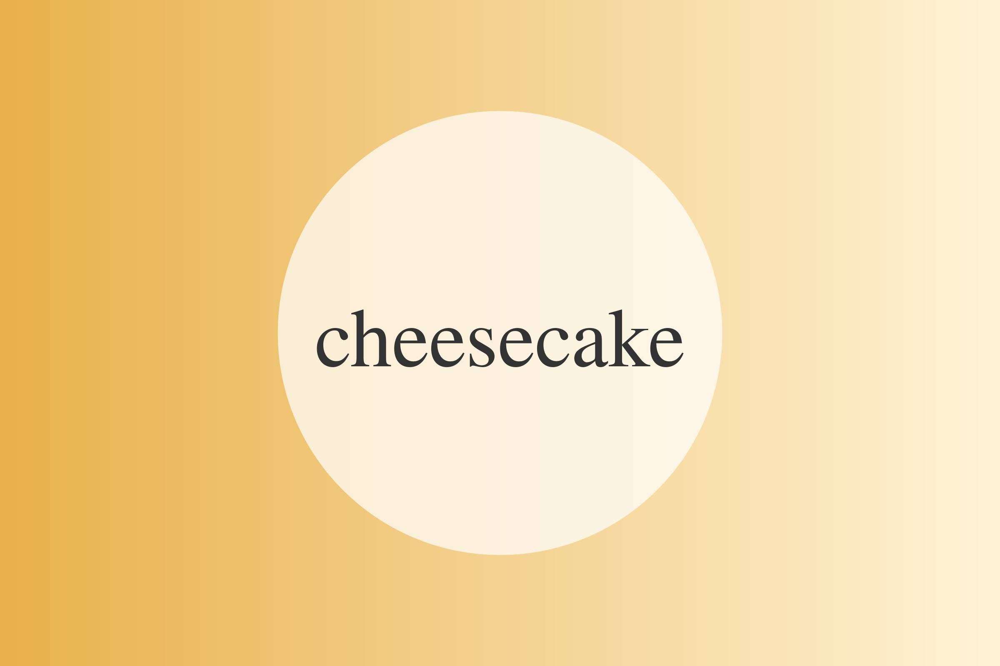
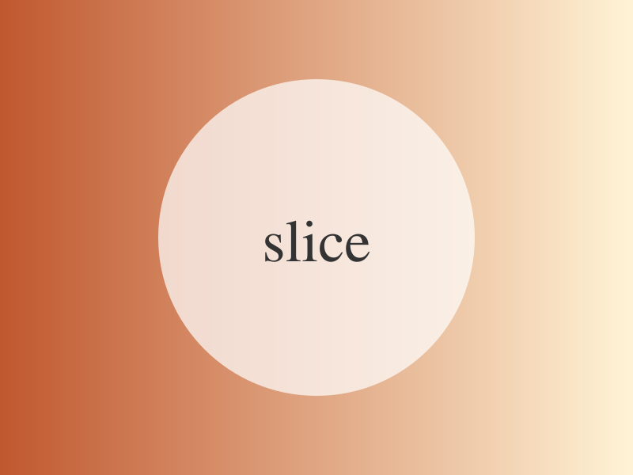

עוגת גבינה אפויה

ארוחה
קינוח
סוג מנה
מאת
סבתא רחל
מנות
12
זמן הכנה
30 דקות
זמן בישול
שעה
slug (כתובת באנגלית, לא חובה)
Baked Cheesecake

מצננים לילה במקרר. מעולה עם תותים – ראו המתכון לרוטב.[a]
[a]הערה פנימית: לבדוק כמות סוכר